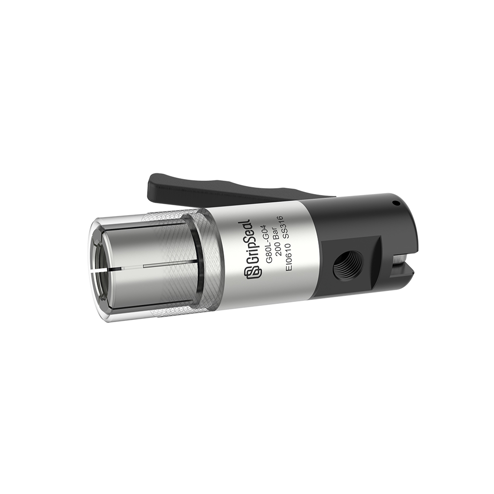
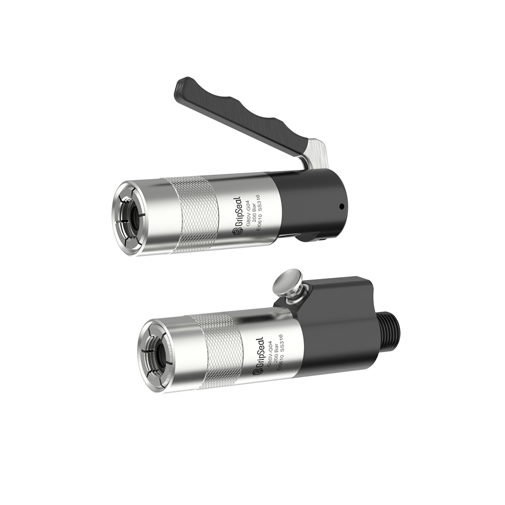

Model Overview
External Thread Sealing Without Repeated Screwing
Designed to seal and connect external threaded interfaces without repeated screw-in handling, helping improve connection efficiency while reducing thread wear during frequent tests.
Quick Facts
Request G85 Selection Help
Typical Application Fit
Use this model route when the workpiece has an external thread and the test process needs faster clamping, repeatable sealing, and manual or pneumatic operation options.